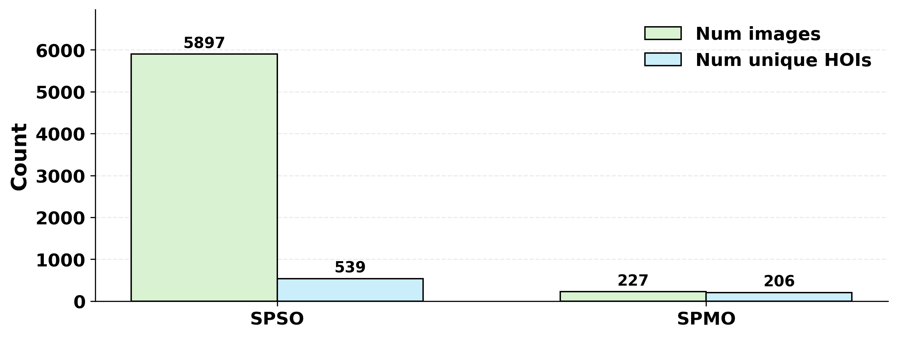
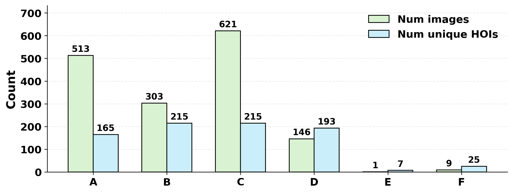
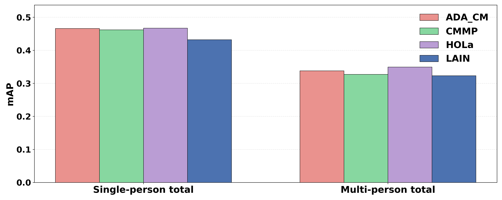
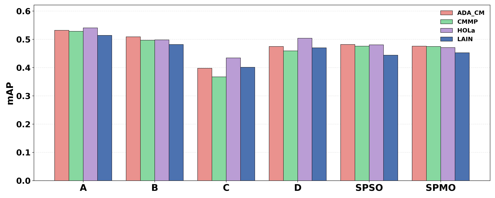

Figure 1. Representative failure modes across four scene configurations — object confusion, interaction confusion, and pairing confusion — all invisible under standard mAP evaluation.
Abstract
Human–object interaction (HOI) detection aims to detect interactions between humans and objects in images. While recent advances have improved performance on existing benchmarks, their evaluations mainly focus on overall prediction accuracy and provide limited insight into the underlying causes of model failures. In particular, modern models often struggle in complex scenes involving multiple people and rare interaction combinations.
In this work, we present a study to better understand the failure modes of two-stage HOI models. Rather than constructing a large-scale benchmark, we decompose HOI detection into multiple interpretable perspectives and analyze model behavior across these dimensions to study different types of failure patterns. We curate a subset of images from HICO-DET organized by human–object–interaction configurations, and analyze model behavior under these configurations. Importantly, high overall benchmark performance does not necessarily reflect robust visual reasoning about human–object relationships.
Dataset Taxonomy
We reorganize the HICO-DET test set into structured subsets that capture different types of ambiguity in human–object interaction configurations. Images are first split by single-person vs. multi-person scenes, then further subdivided along two axes: object relation (same vs. different object instances) and interaction relation (same vs. different interactions), yielding eight categories total.
Categories E & F are rare in HICO-DET (1 and 9 images respectively).
Results
We evaluate four representative two-stage HOI detection models across our structured subsets. All models use official checkpoints without additional fine-tuning.




Key Findings
Multi-Person Gap
All models degrade significantly in multi-person scenes. HICO-DET is >60% single-person, masking this gap in aggregate mAP.
Category C is Hardest
When multiple objects of the same class are present with different subjects, models fail to correctly pair human–object instances.
Verb Errors Dominate
Verb prediction is the most frequent error type. Many high-confidence false positives persist even above 0.5 threshold.
Object-Centric Bias
Models favor verbs that dominate for a given object class — performance correlates with object-conditioned verb frequency, not global HOI frequency.
Instance Representations
HOLa and LAIN — which use instance-level features rather than region crops — exhibit lower pairing error rates, suggesting better spatial grounding.
Benchmark Limitation
Standard mAP hides category-specific failures. Our structured analysis reveals error sources invisible in aggregated evaluation.